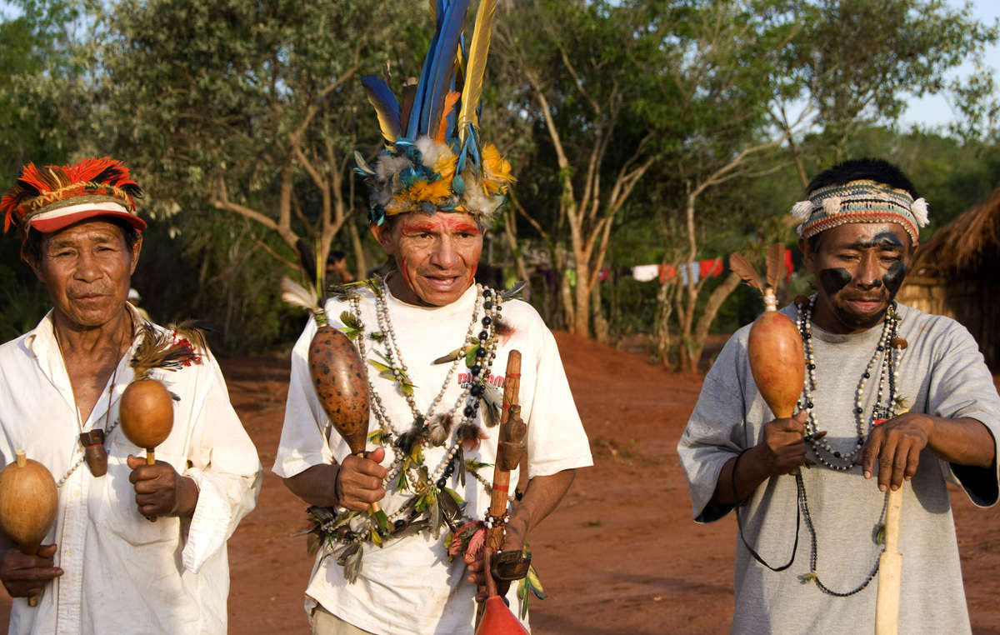

Artículo: Paraguay, la joya por descubrir de Latinoamérica
Paraguay es un país del centro de América Latina con más de 7 millones de habitantes y una superficie de 406.752 km². Limita al este y al norte con Brasil, al oeste con Bolivia y al sur con Argentina. La capital es Asunción y la moneda oficial es el guaraní.
La historia de Paraguay es rica en acontecimientos interesantes. En sus orígenes, el país estaba habitado por varias tribus indígenas, como los guaraníes, que aún hoy conservan su cultura y tradiciones. En 1537, los españoles llegaron a Paraguay y fundaron la colonia de Asunción. En los siglos XVII y XVIII, Paraguay se convirtió en una próspera colonia gracias a la producción de tabaco y yerba mate. En 1811, Paraguay declaró su independencia de España y se convirtió en república.
La cultura paraguaya es muy rica y diversa. La música y la danza son elementos importantes de la cultura paraguaya, con el famoso género musical de la polca paraguaya y la danza tradicional del ballet folclórico. También es famosa la artesanía paraguaya, sobre todo la cerámica y el tejido.

Guaraní
Pero Paraguay también es conocido por su impresionante naturaleza. El Parque Nacional de Ybycuí es un paraíso para los amantes de la naturaleza, con cascadas, ríos y una gran variedad de fauna y flora. También es impresionante el Pantanal, el mayor humedal del mundo, que se extiende por varios países sudamericanos, entre ellos Paraguay.
La Misión Jesuítica de Jesús de Tavarangüe es Patrimonio Mundial de la UNESCO, data del siglo XVIII y constituye un impresionante ejemplo de arquitectura colonial española. La ciudad de Humaitá, en el sur de Paraguay, fue escenario de una importante batalla durante la Guerra de la Triple Alianza, que tuvo lugar entre 1864 y 1870.
En resumen, Paraguay es un país con una rica historia y cultura, una naturaleza impresionante y una gran variedad de atracciones turísticas.